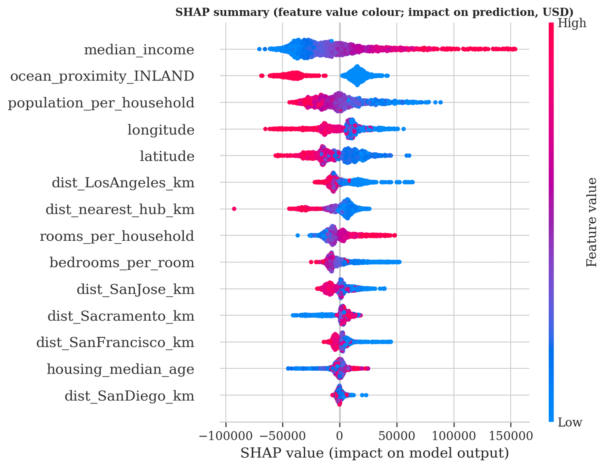
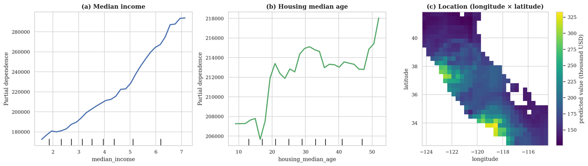
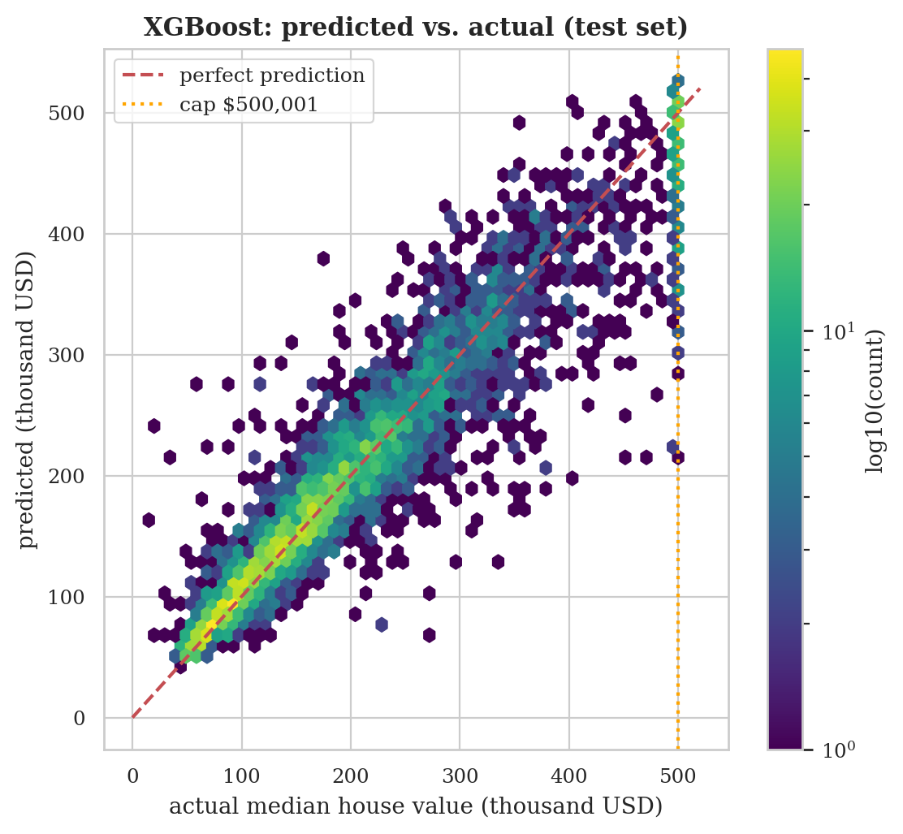
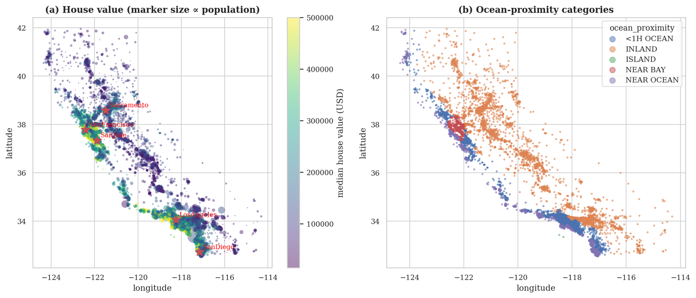
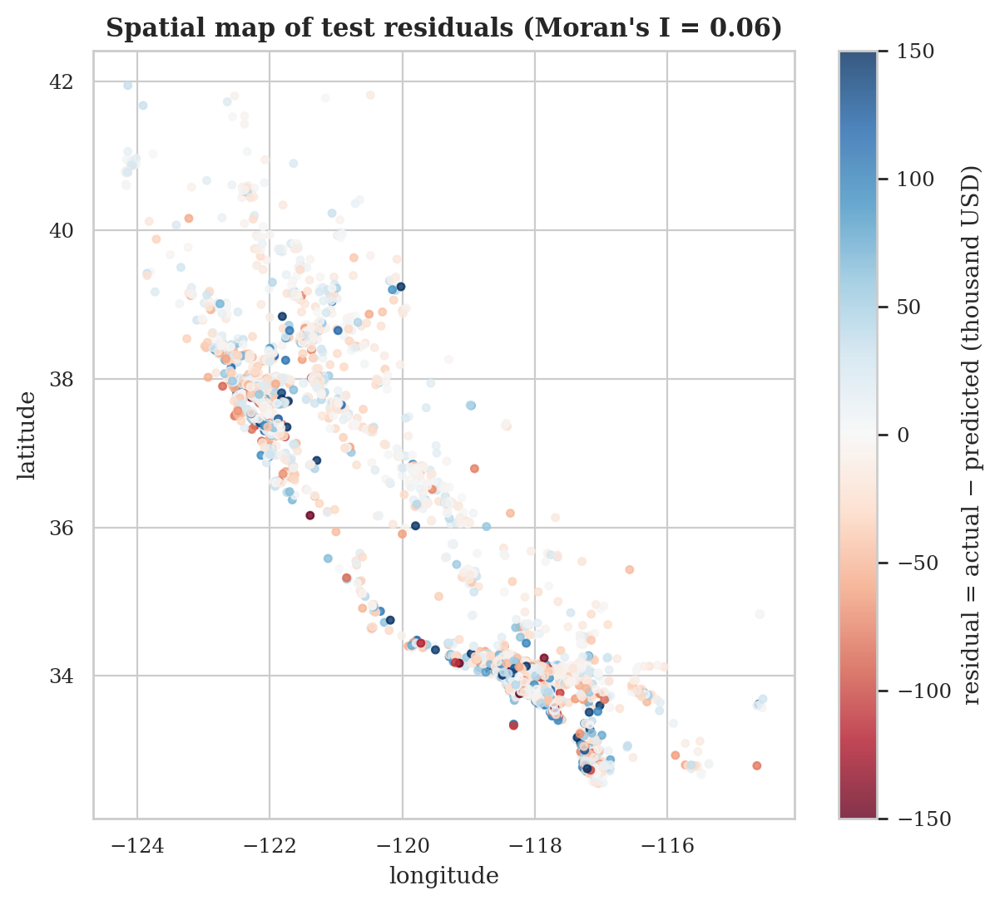
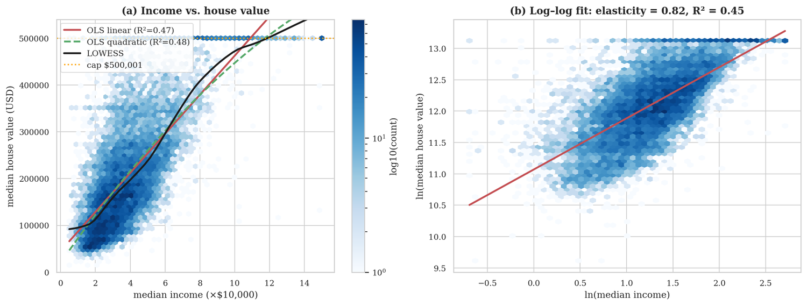
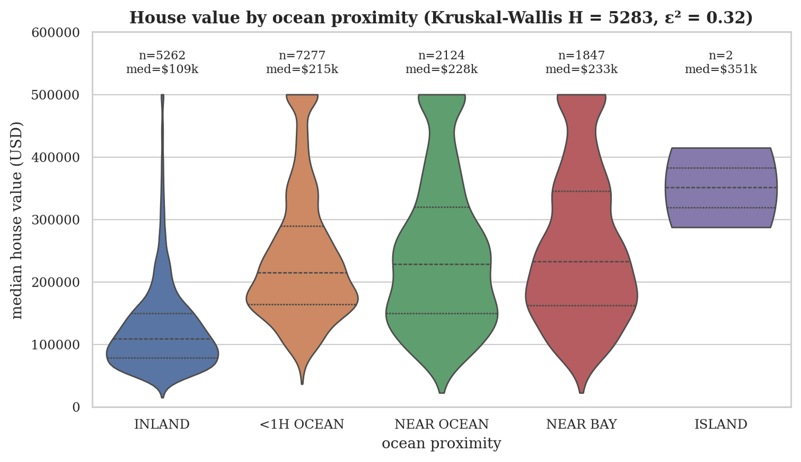

What would the homes in a California neighbourhood sell for?
Drop a pin on the map, describe the neighbourhood, and a model trained on the 1990 US census estimates its median house value. Every dot is a real district the model never saw while learning, so you can compare its estimates with what really happened.
Each dot is a census district from the 20 % of the data held back for testing. Squares mark the five cities the model measures distance to. Click the map, or focus it and use the arrow keys, to move the pin.
How accurate is it?
| Model | Typical error (RMSE) | Average miss (MAE) | Variance explained (R²) |
|---|
RMSE punishes big misses more than small ones, so it is always larger than MAE. The two linear Ridge models show why the target matters: fitting the logarithm of price gives smaller percentage errors but a larger dollar error.
What the model learned
The model weighs where a district is, what its households earn and how crowded its homes are. The plot below shows each district as a dot: red dots had a high value for that feature, blue dots a low one, and the position says how much that pushed the estimate up (right) or down (left).



Six questions the project answered
Where it falls short
These are 1990 prices. The estimates describe what a district's median house was worth in 1990, not today. This is a learning project that demonstrates a method; do not use it to value a home.
The data stops at $500,001. Any district worth more was recorded at the cap, so the model rarely predicts above about $500,000 and under-predicts the most expensive districts.
New regions are harder than new districts. Prices are strongly clustered in space, and the held-back districts sit next to ones the model trained on. Estimates for a place far from any district in the data deserve less trust; the page warns you when a pin is far from the data.
Districts, not houses. Each row is a census block group of roughly 600 to 3,000 people, so the model says something about neighbourhoods, not individual homes.



